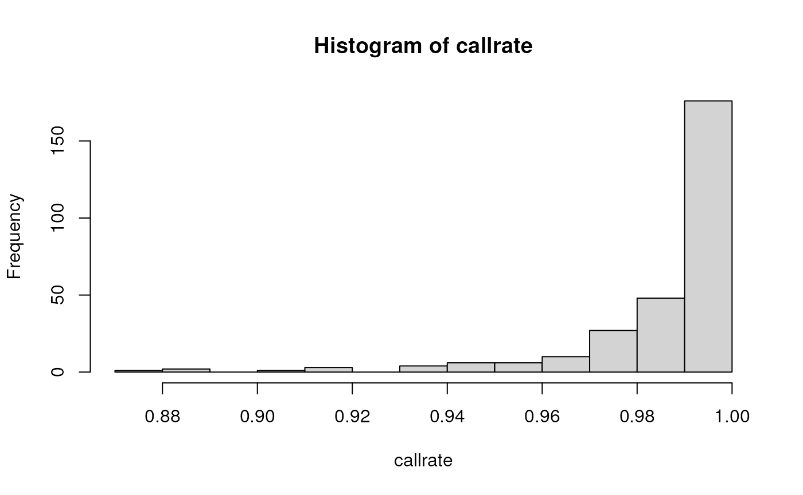

01 BiocHail – GWAS tutorial from hail.is
Vincent J. Carey, stvjc at channing.harvard.edu
March 08, 2023
Source:vignettes/gwas_tut.Rmd
gwas_tut.RmdIntroduction
This document explores using Hail 0.2 with R via basilisk.
The computations follow the GWAS tutorial in the hail documentation. We won’t do all the computations there, and we add some material dealing with R-python interfacing. We’ll note that the actual computations on large data are done in Spark, but we don’t interact directly with Spark at all in this document.
Most of the computations are done via reticulate calls to python; the
access to the hail environment is through basilisk. We also take
advantage of R markdown’s capacity to execute python code directly. If
an R chunk computes x, a python chunk can refer to it as
r.x. If a python chunk computes r.x, an R
chunk can refer to this value as x.
Acquire a slice of the 1000 genomes genotypes and annotations
In this section we import the 1000 genomes VCF slice distributed by
the hail project. hail_init uses basilisk, which ensures
that a specific version of hail and its dependencies are available in an
isolated virtual environment.
Initialization, data acquisition, rendering
Here is a curiosity of R-hail interaction. Note that the following
chunk computes mt, a MatrixTable representation of 1000
genomes data, but our attempt to print it in markdown fails.
## <hail.matrixtable.MatrixTable object at 0x7fc85bf1d820>
print(mt$rows()$select()$show(5L)) # limited info## NULLWe can use the python syntax in a python R markdown
chunk to see what we want. We use prefix r. to find
references defined in our R session (compiling the vignette).
r.mt.rows().select().show(5) # python chunk!## +---------------+------------+
## | locus | alleles |
## +---------------+------------+
## | locus<GRCh37> | array<str> |
## +---------------+------------+
## | 1:904165 | ["G","A"] |
## | 1:909917 | ["G","A"] |
## | 1:986963 | ["C","T"] |
## | 1:1563691 | ["T","G"] |
## | 1:1707740 | ["T","G"] |
## +---------------+------------+
## showing top 5 rowsThe sample IDs:
r.mt.s.show(5) # python chunk!## +-----------+
## | s |
## +-----------+
## | str |
## +-----------+
## | "HG00096" |
## | "HG00099" |
## | "HG00105" |
## | "HG00118" |
## | "HG00129" |
## +-----------+
## showing top 5 rowsHelper functions
Some methods return data immediately useful in R.
mt$count()## [[1]]
## [1] 10961
##
## [[2]]
## [1] 284We can thus define a function dim to behave with hail
MatrixTable instances in a familiar way, along with some others.
## [1] 10961 284
ncol.hail.matrixtable.MatrixTable <- function(x) {
dim(x)[2]
}
nrow.hail.matrixtable.MatrixTable <- function(x) {
dim(x)[1]
}
nrow(mt)## [1] 10961These can be useful on their own, or when calling python methods.
Acquiring column fields
annopath <- path_1kg_annotations()
tab <- hl$import_table(annopath, impute=TRUE)$key_by("Sample")r.tab.describe()# python chunk!## ----------------------------------------
## Global fields:
## None
## ----------------------------------------
## Row fields:
## 'Sample': str
## 'Population': str
## 'SuperPopulation': str
## 'isFemale': bool
## 'PurpleHair': bool
## 'CaffeineConsumption': int32
## ----------------------------------------
## Key: ['Sample']
## ----------------------------------------r.tab.show(width=100)## +-----------+------------+-----------------+----------+------------+---------------------+
## | Sample | Population | SuperPopulation | isFemale | PurpleHair | CaffeineConsumption |
## +-----------+------------+-----------------+----------+------------+---------------------+
## | str | str | str | bool | bool | int32 |
## +-----------+------------+-----------------+----------+------------+---------------------+
## | "HG00096" | "GBR" | "EUR" | False | False | 4 |
## | "HG00097" | "GBR" | "EUR" | True | True | 4 |
## | "HG00098" | "GBR" | "EUR" | False | False | 5 |
## | "HG00099" | "GBR" | "EUR" | True | False | 4 |
## | "HG00100" | "GBR" | "EUR" | True | False | 5 |
## | "HG00101" | "GBR" | "EUR" | False | True | 1 |
## | "HG00102" | "GBR" | "EUR" | True | True | 6 |
## | "HG00103" | "GBR" | "EUR" | False | True | 5 |
## | "HG00104" | "GBR" | "EUR" | True | False | 5 |
## | "HG00105" | "GBR" | "EUR" | False | False | 4 |
## +-----------+------------+-----------------+----------+------------+---------------------+
## showing top 10 rowsAdding the sample annotation to the MatrixTable; aggregation
We combine the tab defined above, with the MatrixTable
instance, usiny python code reaching to R via r..
r.mt = r.mt.annotate_cols(pheno = r.tab[r.mt.s]) # python chunk!
r.mt.col.describe()## --------------------------------------------------------
## Type:
## struct {
## s: str,
## pheno: struct {
## Population: str,
## SuperPopulation: str,
## isFemale: bool,
## PurpleHair: bool,
## CaffeineConsumption: int32
## }
## }
## --------------------------------------------------------
## Source:
## <hail.matrixtable.MatrixTable object at 0x7fc85913c6a0>
## Index:
## ['column']
## --------------------------------------------------------Aggregation methods can be used to obtain contingency tables or descriptive statistics.
First, we get the frequencies of superpopulation membership:
mt$aggregate_cols(hl$agg$counter(mt$pheno$SuperPopulation))## $AFR
## [1] 76
##
## $AMR
## [1] 34
##
## $EAS
## [1] 72
##
## $EUR
## [1] 47
##
## $SAS
## [1] 55Then statistics on caffeine consumption:
uu <- mt$aggregate_cols(hl$agg$stats(mt$pheno$CaffeineConsumption))
names(uu)## [1] "annotate" "drop" "get" "items" "keys" "max"
## [7] "mean" "min" "n" "select" "stdev" "sum"
## [13] "values"
uu$mean## [1] 4.415493
uu$stdev## [1] 1.577763Working with variants; quality assessment
The significance of the aggregation functions is that the computations are performed by Spark, on potentially huge distributed data structures.
Now we aggregate over rows (SNPs). We’ll use python directly:
from pprint import pprint # python chunk!
snp_counts = r.mt.aggregate_rows(r.hl.agg.counter(r.hl.Struct(ref=r.mt.alleles[0], alt=r.mt.alleles[1])))
pprint(snp_counts)## {Struct(ref='G', alt='T'): 480,
## Struct(ref='T', alt='A'): 79,
## Struct(ref='T', alt='C'): 1879,
## Struct(ref='T', alt='G'): 468,
## Struct(ref='C', alt='A'): 496,
## Struct(ref='A', alt='T'): 76,
## Struct(ref='C', alt='G'): 150,
## Struct(ref='G', alt='C'): 112,
## Struct(ref='A', alt='C'): 454,
## Struct(ref='A', alt='G'): 1944,
## Struct(ref='C', alt='T'): 2436,
## Struct(ref='G', alt='A'): 2387}A histogram of read depths
Hail uses the concept of ‘entries’ for matrix elements, and each ‘entry’ is a ‘struct’ with potentially many fields.
Here we’ll use R to compute a histogram of sequencing depths over all samples and variants.
p_hist <- mt$aggregate_entries(
hl$expr$aggregators$hist(mt$DP, 0L, 30L, 30L))
names(p_hist)## [1] "annotate" "bin_edges" "bin_freq" "drop" "get" "items"
## [7] "keys" "n_larger" "n_smaller" "select" "values"
length(p_hist$bin_edges)## [1] 31
length(p_hist$bin_freq)## [1] 30
midpts <- function(x) diff(x)/2+x[-length(x)]
dpdf <- data.frame(x=midpts(p_hist$bin_edges), y=p_hist$bin_freq)
ggplot(dpdf, aes(x=x,y=y)) + geom_col() + ggtitle("DP") + ylab("Frequency")
An exercise: produce a function mt_hist that produces a
histogram of measures from any of the relevant VCF components of a
MatrixTable instance.
Note also all the aggregators available:
names(hl$expr$aggregators)## [1] "aggregators" "all" "any"
## [4] "approx_cdf" "approx_median" "approx_quantiles"
## [7] "array_agg" "array_sum" "call_stats"
## [10] "collect" "collect_as_set" "corr"
## [13] "count" "count_where" "counter"
## [16] "downsample" "explode" "filter"
## [19] "fold" "fraction" "group_by"
## [22] "hardy_weinberg_test" "hist" "inbreeding"
## [25] "info_score" "linreg" "max"
## [28] "mean" "min" "ndarray_sum"
## [31] "product" "stats" "sum"
## [34] "take"We’d also note that hail has a direct interface to ggplot2.
Quality summaries
A high-level function adds quality metrics to the MatrixTable.
mt <- hl$sample_qc(mt)r.mt.col.describe() # python!## --------------------------------------------------------
## Type:
## struct {
## s: str,
## pheno: struct {
## Population: str,
## SuperPopulation: str,
## isFemale: bool,
## PurpleHair: bool,
## CaffeineConsumption: int32
## },
## sample_qc: struct {
## dp_stats: struct {
## mean: float64,
## stdev: float64,
## min: float64,
## max: float64
## },
## gq_stats: struct {
## mean: float64,
## stdev: float64,
## min: float64,
## max: float64
## },
## call_rate: float64,
## n_called: int64,
## n_not_called: int64,
## n_filtered: int64,
## n_hom_ref: int64,
## n_het: int64,
## n_hom_var: int64,
## n_non_ref: int64,
## n_singleton: int64,
## n_snp: int64,
## n_insertion: int64,
## n_deletion: int64,
## n_transition: int64,
## n_transversion: int64,
## n_star: int64,
## r_ti_tv: float64,
## r_het_hom_var: float64,
## r_insertion_deletion: float64
## }
## }
## --------------------------------------------------------
## Source:
## <hail.matrixtable.MatrixTable object at 0x7fc858f009d0>
## Index:
## ['column']
## --------------------------------------------------------The call rate histogram is given by:
callrate <- mt$sample_qc$call_rate$collect()
graphics::hist(callrate)
Filtering
Sample quality
We’ll use the python code given for filtering, in which per-sample mean read depth and call rate are must exceed (arbitrarily chosen) thresholds.
# python chunk!
r.mt = r.mt.filter_cols((r.mt.sample_qc.dp_stats.mean >= 4) & (r.mt.sample_qc.call_rate >= 0.97))
print('After filter, %d/284 samples remain.' % r.mt.count_cols())## After filter, 250/284 samples remain.Genotype quality
Again we use the python code for filtering according to
- relative purity of reads underlying homozygous reference or alt calls
- good balance of ref/alt counts for het calls
ab = r.mt.AD[1] / r.hl.sum(r.mt.AD)
filter_condition_ab = ((r.mt.GT.is_hom_ref() & (ab <= 0.1)) |
(r.mt.GT.is_het() & (ab >= 0.25) & (ab <= 0.75)) |
(r.mt.GT.is_hom_var() & (ab >= 0.9)))
fraction_filtered = r.mt.aggregate_entries(r.hl.agg.fraction(~filter_condition_ab))
print(f'Filtering {fraction_filtered * 100:.2f}% entries out of downstream analysis.')## Filtering 3.60% entries out of downstream analysis.r.mt = r.mt.filter_entries(filter_condition_ab)Note that filtering entries does not change MatrixTable shape.
dim(mt)## [1] 10961 250Variant characteristics
Allele frequencies, Hardy-Weinberg equilibrium test results and other
summaries are obtained using the variant_qc function.
mt = hl$variant_qc(mt)r.mt.row.describe() #! python## --------------------------------------------------------
## Type:
## struct {
## locus: locus<GRCh37>,
## alleles: array<str>,
## rsid: str,
## qual: float64,
## filters: set<str>,
## info: struct {
## AC: array<int32>,
## AF: array<float64>,
## AN: int32,
## BaseQRankSum: float64,
## ClippingRankSum: float64,
## DP: int32,
## DS: bool,
## FS: float64,
## HaplotypeScore: float64,
## InbreedingCoeff: float64,
## MLEAC: array<int32>,
## MLEAF: array<float64>,
## MQ: float64,
## MQ0: int32,
## MQRankSum: float64,
## QD: float64,
## ReadPosRankSum: float64,
## set: str
## },
## variant_qc: struct {
## dp_stats: struct {
## mean: float64,
## stdev: float64,
## min: float64,
## max: float64
## },
## gq_stats: struct {
## mean: float64,
## stdev: float64,
## min: float64,
## max: float64
## },
## AC: array<int32>,
## AF: array<float64>,
## AN: int32,
## homozygote_count: array<int32>,
## call_rate: float64,
## n_called: int64,
## n_not_called: int64,
## n_filtered: int64,
## n_het: int64,
## n_non_ref: int64,
## het_freq_hwe: float64,
## p_value_hwe: float64,
## p_value_excess_het: float64
## }
## }
## --------------------------------------------------------
## Source:
## <hail.matrixtable.MatrixTable object at 0x7fc858e98b80>
## Index:
## ['row']
## --------------------------------------------------------GWAS execution
A built-in procedure for testing for association between the (simulated) caffeine consumption measure and genotype will be used.
The following commands eliminate variants with minor allele frequency less than 0.01, along with those with small \(p\)-values in tests of Hardy-Weinberg equilibrium.
r.mt = r.mt.filter_rows(r.mt.variant_qc.AF[1] > 0.01)
r.mt = r.mt.filter_rows(r.mt.variant_qc.p_value_hwe > 1e-6)
r.mt.count()## (7844, 250)Association test for quantitative response
Now we perform a naive test of association. The Manhattan plot generated by hail can be displayed for interaction using bokeh. We comment this out for now; it should be possible to embed the bokeh display in this document but the details are not ready-to-hand.
r.gwas = r.hl.linear_regression_rows(y=r.mt.pheno.CaffeineConsumption,
x=r.mt.GT.n_alt_alleles(),
covariates=[1.0])
# r.pl = r.hl.plot.manhattan(r.gwas.p_value)
# import bokeh
# bokeh.plotting.show(r.pl)## 2023-03-08 03:16:15.212 Hail: INFO: linear_regression_rows: running on 250 samples for 1 response variable y,
## with input variable x, and 1 additional covariate...
## 2023-03-08 03:16:17.443 Hail: INFO: wrote table with 7844 rows in 2 partitions to /tmp/persist_tablev6MHGQU1nq
## Total size: 520.43 KiB
## * Rows: 520.42 KiB
## * Globals: 11.00 B
## * Smallest partition: 3782 rows (250.69 KiB)
## * Largest partition: 4062 rows (269.73 KiB)The “QQ plot” that helps evaluate adequacy of the analysis can be
formed using hl.plot.qq for very large applications; here
we collect the results for plotting in R.
First we estimate \(\lambda_{GC}\)
pv = gwas$p_value$collect()
x2 = stats::qchisq(1-pv,1)
lam = stats::median(x2, na.rm=TRUE)/stats::qchisq(.5,1)
lam## [1] 3.558453And the qqplot:
qqplot(-log10(ppoints(length(pv))), -log10(pv), xlim=c(0,8), ylim=c(0,8),
ylab="-log10 p", xlab="expected")
abline(0,1)There is hardly any point to examining a Manhattan plot in this situation. But let’s see how it might be done. We’ll use igvR to get an interactive and extensible display.
locs <- gwas$locus$collect()
conts <- sapply(locs, function(x) x$contig)
pos <- sapply(locs, function(x) x$position)
library(igvR)
mytab <- data.frame(chr=as.character(conts), pos=pos, pval=pv)
gt <- GWASTrack("simp", mytab, chrom.col=1, pos.col=2, pval.col=3)
igv <- igvR()
setGenome(igv, "hg19")
displayTrack(igv, gt)Evaluating population stratification
An approach to assessing population stratification is provided as
hwe_normalized_pca. See the hail methods
docs for details.
We are avoiding a tuple assignment in the tutorial document.
r.pcastuff = r.hl.hwe_normalized_pca(r.mt.GT)## 2023-03-08 03:16:22.005 Hail: INFO: hwe_normalize: found 7836 variants after filtering out monomorphic sites.
## 2023-03-08 03:16:24.833 Hail: INFO: pca: running PCA with 10 components...
## 2023-03-08 03:16:31.018 Hail: INFO: wrote table with 0 rows in 0 partitions to /tmp/persist_tablevhEsJUbIv4
## Total size: 21.29 KiB
## * Rows: 0.00 B
## * Globals: 21.29 KiB
## * Smallest partition: N/A
## * Largest partition: N/Ar.mt = r.mt.annotate_cols(scores=r.pcastuff[1][r.mt.s].scores)We’ll collect the key information and plot.
sc <- pcastuff[[2]]$scores$collect()
pc1 = sapply(sc, "[", 1)
pc2 = sapply(sc, "[", 2)
fac = mt$pheno$SuperPopulation$collect()
myd = data.frame(pc1, pc2, pop=fac)
library(ggplot2)
ggplot(myd, aes(x=pc1, y=pc2, colour=factor(pop))) + geom_point()Now repeat the association test with adjustments for population of origin and gender.
r.gwas2 = r.hl.linear_regression_rows(
y=r.mt.pheno.CaffeineConsumption,
x=r.mt.GT.n_alt_alleles(),
covariates=[1.0,r.mt.pheno.isFemale,r.mt.scores[0],
r.mt.scores[1], r.mt.scores[2]])## 2023-03-08 03:16:37.012 Hail: INFO: linear_regression_rows: running on 250 samples for 1 response variable y,
## with input variable x, and 5 additional covariates...
## 2023-03-08 03:16:39.013 Hail: INFO: wrote table with 7844 rows in 2 partitions to /tmp/persist_tablewn8nKBQfOO
## Total size: 519.18 KiB
## * Rows: 519.17 KiB
## * Globals: 11.00 B
## * Smallest partition: 3782 rows (250.09 KiB)
## * Largest partition: 4062 rows (269.08 KiB)New value of \(\lambda_{GC}\):
pv = gwas2$p_value$collect()
x2 = stats::qchisq(1-pv,1)
lam = stats::median(x2, na.rm=TRUE)/stats::qchisq(.5,1)
lam## [1] 1.08359A manhattan plot for chr8:
locs <- gwas2$locus$collect()
conts <- sapply(locs, function(x) x$contig)
pos <- sapply(locs, function(x) x$position)
mytab <- data.frame(chr=as.character(conts), pos=pos, pval=pv)
ggplot(mytab[mytab$chr=="8",], aes(x=pos, y=-log10(pval))) + geom_point()Conclusions
The tutorial document proceeds with some illustrations of arbitrary aggregations. We will skip these for now.
Additional vignettes will address
- A more realistic higher-volume VCF
- Working with UKBB Summary statistics in GCP
- Representing linkage disequilibrium
- Simulating variant collections using Balding-Nichols
- Simulating variant collections using Pritchard-Stephens-Donnelly
- Connecting genotypes with phenotype data in FHIR